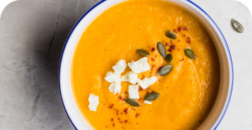
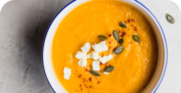

Cut the pumpkin. Cut the skin off and scrape seeds out. Cut into chunks.

Place the pumpkin, onion, garlic, broth and water in a pot — liquid won't quite cover all the pumpkin. Bring to a boil, uncovered, then reduce heat and let simmer rapidly until pumpkin is tender (check with butter knife).

Remove from heat and use a stick blender to blend until smooth.

Season to taste with salt and pepper, stir through cream (never boil soup after adding soup, cream will split). Ladle soup into bowls, drizzle over a bit of cream, sprinkle with pepper and parsley if desired. Serve with crusty bread!
Enjoy!